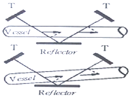
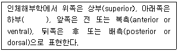
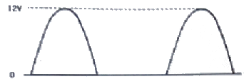
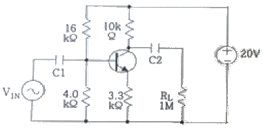
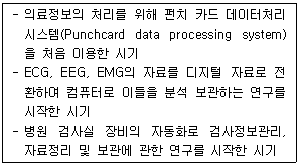
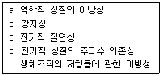

의공기사 (2017-03-05 기출문제)
1과목: 기초의학 및 의공학
1. 전해질 겔(electrolyte gel)의 역할에 대한 설명으로 틀린 것은?
- 전극과 피부사이에 절연층을 만든다.
- 전극과 피부간의 전기적 저항을 줄인다.
- 전극과 피부간의 전기적 접촉 상태를 좋게 유지한다.
- 피부 각질층의 전기 전도도를 증가시킨다.
(정답률: 91%)

2. 그림의 초음파 혈류계를 이용하여 혈류의 속도를 측정하는 메커니즘에 대해 잘못 설명한 것은?

- 두 개의 초음파 송수신 장치(T)와 한 개의 반사판(Reflector)으로 구성되어 있다.
- 초음파가 반사판을 통과한 후 들어오는 각도를 계측한다.
- 한 쪽의 초음파 송신장치를 출발한 초음파가 혈관과 반사판을 지나 수신 장치에 들어올 때까지의 진행 시간을 계측한다.
- 혈류량을 계측할 때는 혈관의 단면에 대한 대략적인 정보가 필요하다.
(정답률: 90%)
3. 실무율에 대한 설명 중 트린 것은?
- 신경에 자극을 가할 때 역치 이상일 때는 반응을 일으키고, 역치 이하일 때는 활동 전압은 발생되지 않으나 다만 흥분성의 변화만이 있는 것을 실무율이라고 한다.
- 단일 신경섬유가 자극의 강도에 따라 최고의 흥분을 하거나 흥분을 하지 않는 현상을 말한다.
- 실무율은 신경세포에서만 일어난다.
- 단일 세포에서 관찰되는 성질이다.
(정답률: 86%)
4. 다음 중 ATP를 소모하는 이온의 이동과정은?
- 세포내부에서 외부로 K+이동
- 세포내부에서 외부로 Ca2+이동
- 세포내부에서 외부로 Na+이동
- 세포내부에서 외부로 SO42-이동
(정답률: 77%)
5. 인체의 혈액량은 대략 체중의 몇 퍼센트 정도인가?
- 1%
- 7%
- 23%
- 54%
(정답률: 92%)
6. 방사성 붕괴 시 나타나는 현상과 거리가 먼 것은?
- alpha decay
- X-ray decay
- positron decay
- gamma decay
(정답률: 86%)
7. 미세전극(microelectrode)에 대한 설명으로 틀린 것은?
- 전극의 길이는 0.⑤~10㎛정도이다.
- 세포의 활동전위를 측정하기 위한 전극이다.
- 급속 미세전극, 유리 마이크로피펫 미세전극등이 있다.
- 인체 내에 삽입하는 전극이다.
(정답률: 77%)
8. 휴지기 전위를 조정하는 메커니즘이 아닌 것은?
- Na+이온보다 K+이온을 더 잘 통과시킨다.
- 삼투 현상에 의해 이온을 이동시켜 준다.
- 크기가 큰 음전하의 단백질은 세포막을 통과할 수 없다.
- Na+/K+펌프는 Na+ 이온 3개를 내보낼 때 K+이온 2개를 들여온다.
(정답률: 89%)
9. 서미스터(thermistor)에 대한 설명으로 틀린 것은?
- 반도체 물질의 온도가 증가하면 저항값이 감소하는 부특성을 주로 이용한다.
- 소형으로 만들 수 있으며 응답속도가 빠르다.
- 구조적으로 직열형, 방열형, 지연형으로 구분된다.
- 온도를 기전력으로 바꾸어 전류를 흐르게 한다.
(정답률: 58%)
10. 심장의 벽은 3층 구조로 되어 있다. 밖에서부터 차례로 옳게 나열된 것은?
- 심외막-심근-심내막
- 심내막-심근-심외막
- 심외막-심내막-심근
- 심내막-심외막-심근
(정답률: 90%)
11. 다음 ( )안에 들어갈 적절한 용어는?

- left
- medial
- inferior
- lateral
(정답률: 92%)
12. 이식형 생체 전극의 특징으로 틀린 것은?
- 인체에 삽입되는 전극이다.
- 장기간 측정용으로 사용 가능하다.
- 전극의 신호는 무선방식으로만 전달된다.
- 인체 내부 장기의 전위 측정이나 전기 자극을 목적으로 한다.
(정답률: 94%)
13. 포도당 바이오센서에는 어떤 물리량을 측정하는 센서가 필요한가?
- 산소농도
- 질소농도
- pH
- 온도
(정답률: 78%)
14. 일반적으로 혈액의 온도가 낮아질 때의 현상으로 옳은 것은?
- 산소와 영양분 공급이 풍부해진다.
- 혈류속도가 빨라진다.
- 액체의 점성이 커진다.
- 혈류저항이 작아진다.
(정답률: 79%)
15. 류마티스 관절염의 특징이 아닌 것은?
- 자가면역질환이다.
- 남성에 비해 여성의 발병률이 높다.
- 모든 관절에 생길 수 있다.
- 60대 이상 노인들에게만 발병한다.
(정답률: 94%)
16. 금속판 전극을 사용할 수 없는 곳은?
- 등
- 복부
- 넓적다리
- 소장
(정답률: 95%)
17. 분극 전극이 아닌 것은?
- 스테인리스 재질의 바늘형 전극
- 겔을 사용하지 않은 건성 전극(dry electrode)
- 엔치 내부에 이식하는 백금 전극
- 일회용 Ag-AgCl 전극
(정답률: 96%)
18. 위액 분비를 자극하는 인자가 아닌 것은?
- 아세틸콜린(acetylcholine)
- 펩시노겐(perpsinogen)
- 가스트린(astrin)
- 히스타민(histamine)
(정답률: 44%)
19. 탄성한계 내에서 압력 또는 변위에 따른 전선의 길이, 직경의 변화를 이용하는 트랜스듀서는?
- 스트레인게이지
- 압전소자
- 서미스터
- 바리스터
(정답률: 90%)
20. 골격의 기능으로 옳은 것은?
- 소화기능
- 배설기능
- 발성기능
- 조혈기능
(정답률: 91%)
2과목: 의용전자공학
21. 다음의 다이오드 소자 중 순방향 동작 전압이 가장 낮은 것은?
- 제너 다이오드
- 가변용량 다이오드
- 발광 다이오드
- 쇼트키 다이오드
(정답률: 69%)
22. 출력 전력 100W의 반송파를 50% 변조할 때 측파대 전력은 몇 W인가?
- 3.5
- 6.5
- 10.5
- 12.5
(정답률: 56%)
23. 그림과 같이 반파 정류된 전압의 평균값은?

- 약 3.82 V
- 약 6 V
- 약 7.64 V
- 약 12 V
(정답률: 73%)
24. 다음 회로에서 트랜지스터의 βDC는 200이고, VBE=0.7V이다. C1과 C2의 용량은 리액턴스를 무시할 수 있을 정도로 충분히 크다. VIN=1mV일 때 RL에 출력되는 교류전압은 몇 mV 인가?

- 400
- 30
- 10
- 3
(정답률: 36%)
25. 아날로그 신호를 디지털 신호로 변환할 때 발생하는 양자화 오차에 대한 설명으로 틀린 것은?
- 연속되는 양을 이산값으로 근사화 시킬 때 원신호와의 차이로 발생하는 오차를 말한다.
- 디지털화에 따르는 품질저하의 원인이 된다.
- 양자화 잡음을 줄이기 위해 양자화 폭을 일정하게 고정하는 선형 양자화 방법이 있다.
- 계단 형태의 신호를 저역 통과 필터에 적용할 때 발생한다.
(정답률: 82%)
26. 10진수 314를 16진수로 옳게 변환한 것은?
- FF
- 12D
- 13A
- 213
(정답률: 80%)
27. 마이크로컴퓨터의 입출력 시스템에서 인터페이스(interface) 회로의 기본적인 기능에 해당되지 않는 것은?
- 데이터 형식의 변환
- 입출력 장치의 상태조사
- 전송의 동기 제어
- 신호의 레벨 제어
(정답률: 77%)
28. JK 플립플롭에서 J=0, K=0 그리고 Q=0일 때의 다음 상태인 Q1과, J=0, K=0 그리고 Q=1일 때의 다음 상태인 Q2를 올바르게 표현한 것은? (단, Q는 현재 상태를 의미한다.)
- Q1=0, Q2=0
- Q1=0, Q2=1
- Q1=1, Q2=0
- Q1=1, Q2=1
(정답률: 94%)
29. 뇌전도 측정법에 관한 설명 중 틀린 것은?
- 깊은 수면 중에 강하게 나타나는 뇌파는 델타(δ)파이다.
- 10-20 전극배치법은 전극을 전두엽에 10개, 후두엽에 20개를 배치하는 방법이다.
- 단극유도법으로 측정하면 대뇌피질 및 심부의 이상 상태를 쉽게 발견할 수 있다.
- 단극유도법의 기준 전극은 일반적으로 귓볼에 장착한다.
(정답률: 73%)
30. 아날로그 신호를 변조하여 전송할 때의 변조 방식이 아닌 것은?
- 진폭 변조
- 주파수 변조
- 위상 변조
- 델타 변조
(정답률: 76%)
31. 전자기유도에 대한 설명 중 틀린 것은?
- 회로에 쇄교하는 자속이 시간적으로 변화하면 기전력이 발생한다.
- 전자기유도 회로에서 발생하는 기전력은 쇄교 자속의 시간 변화율에 반비례한다.
- 유도 기전력의 방향은 렌츠의 법칙(Lenz’s law)으로 알 수 있다.
- 와전류의 원인이 된다.
(정답률: 63%)
32. 뇌전도에 대한 설명으로 틀린 것은?
- 뇌의 전기적 활동은 신경세포에 의해 발생한다.
- 뇌전도는 수십 μV 정도의 극히 미세한 전위이다.
- 10Hz~100Hz 범위의 주파수 특성을 갖는다.
- 간질, 수면장애 등의 뇌관련 질환의 진단에 유용하다.
(정답률: 83%)
33. 생체 계측을 위한 시스템의 기본 구성 요소가 아닌 것은?
- 측정대상
- 센서
- 출력장치
- 압력
(정답률: 81%)
34. 다음의 저항 연결에 관한 설명 중 틀린 것은?
- 두 개의 저항이 직렬 연결된 회로에서는 저항이 큰 쪽의 전압강하가 더 크다.
- 두 개의 저항이 병렬 연결된 회로에서는 저항이 큰 쪽에 흐르는 전류가 더 크다.
- 전류계와 저항을 병렬 연결하면 전류계의 측정점위가 확대된다.
- 전압계와 저항을 직렬 접속하면 전압계의 측정점위가 확대된다.
(정답률: 81%)
35. 마이크로프로세서의 동작에 관한 설명으로 틀린 것은?
- 마이크로프로세서의 타이밍 동작은 패치(fatch) 사이클이 존재한다.
- 마이크로프로세서의 타이밍 동작은 실행(execute) 사이클이 존재한다.
- 1명령당의 기간을 명령(instruction) 사이클이라 한다.
- 클럭의 1주기를 스택(stack) 사이클이라 한다.
(정답률: 71%)
36. 주파수 범위가 8~13Hz이고, 정서적으로 안정된 상태에 있을 때 가장 활성화되는 뇌전도 파형은?
- 델타(δ)파
- 세타(θ)파
- 알파(α)파
- 베타(β)파
(정답률: 77%)
37. 진공 중에 두 점전하 Q1과 Q2사이에 작용하는 힘을 F라고 하고, Q1과 Q2 부근에 점전하 Q3을 놓을 경우에 Q1과 Q2사이에 새롭게 작용하는 힘을 F’라고 하면, F와 F’의 크기 관계를 옳게 표현한 것은?
- F ＞ F’
- F ＜ F’
- F = F’
- Q3의 크기에 따라 다르다.
(정답률: 81%)
38. A급 증폭기에 관한 설명 중 옳은 것은?
- 정현과 신호의 입력에 대하여 반주기 이하의 출력을 얻을 수 있으며, 주로 고주파 동조 증폭기에서 이용된다.
- 반주기(180도)보다 조금 많은 영역에서 동작하도록 바이어스 되어 있다.
- 신호가 없는 상태에서 트랜지스터에 전류가 흐르지 않으며, 정현파 신호를 인가할 때 반주기만큼 전류가 흐른다.
- 입력주기의 전주기에 대하여 선형영역에서 동작하며, 출력파형과 입력파형의 모양이 같다.
(정답률: 65%)
39. 생체계측 시에 증폭기의 신호 출력을 측정하였더니 0.5⑤V이고, 신호를 제거하고 잡음을 측정하였더니 50.5μV인 경우 S/N비는 몇 dB인가?
- 10
- 40
- 60
- 80
(정답률: 70%)
40. 심장 박동에 따라 발생되는 미세한 체적의 변화를 측정하여 가시적으로 기록하는 맥과 검사법은?
- 용적맥파법
- 압맥파법
- 오실로메트릭 방법
- 초음파 감지법
(정답률: 65%)
3과목: 의료안전·법규 및 정보
41. 방사선 관계 종사자의 선량한도 기준으로 틀린 것은?
- 수정체 등가선량: 연간 150mSv 이하
- 피부 등가선량: 연간 500mSv 이하
- 유효선량: 연간 50mSv 이하
- 5년간 누적 유효선량: 250mSv 이하
(정답률: 64%)
42. 향후 PACS의 발전방향과 거리가 먼 것은?
- 병원정보시스템과 분리
- 컴퓨터 보조 진단에 응용
- 영상의학의 연구 및 교육 정ㅂ 제공
- 3차원 영상 기술의 활용
(정답률: 87%)
43. 병원에서 주로 사용하는 의료 가스는 가스 중앙 파이프 시스템을 통해 공급이 이루어진다. 시스템 구성에 있어서 필요 없는 것은?
- 고압가스 실린더
- 진공펌프
- 콤프레서(compressor)
- 산업용 가스
(정답률: 93%)
44. 의료폐기물의 전용용기에 표시하는 도형의 색상을 잘못 연결한 것은?
- 재활용하는 태반 - 녹색
- 격리의료폐기물 - 붉은색
- 위해의료폐기물(상자형 용기) - 노란색
- 일반의료폐기물 – 흰색
(정답률: 85%)
45. 다음 중 5년 이하의 징역 또는 5천만원 이하의 벌금에 해당하는 경우는?
- 허가 또는 인증을 받지 아니하거나 신고를 하지 아니한 읠기기를 수리ㆍ판매ㆍ임대ㆍ수여를 한 경우
- 사용 시 국민건강에 중대한 피해를 주거나 치명적 영향을 줄 가능성이 있는 것으로 인정되는 의료기기에 대해 사용중지의 명령을 위반한 자의 경우
- 의료기기의 첨부문서에 사용방법과 사용 시 주의사항을 기입하지 않은 경우
- 고의 또는 중대한 과실로 거짓의 기술문서심사결과통지서, 임상시험결과보고서, 비임상시험성적서를 작성 또는 발급에 해당하는 위반행위를 한 자의 경우
(정답률: 84%)
46. 인체에 흐르는 전류와 인체반응에서 전류는 실효치, 주파수 60Hz, 1초간 통전-매크로 쇼크 전류 조건에서 통증, 혼절가능, 기절, 허탈, 피로감을 느끼는 최소 전류값은 얼마 이상인가?
- 1mA
- 6A
- 50mA
- 1A
(정답률: 55%)
47. 병원정보시스템 전상망 구축 시 고려해야할 사항으로 틀린 것은?
- 이동성 및 공공복지 증진
- 안정성
- 보안성
- 전산망 설치 공간
(정답률: 84%)
48. 의료기기위원회는 분야별로 분과위원회를 둘 수 있는데 분과위원회의 구성 기준은?
- 5명 이내의 위원으로 구성
- 10명 이내의 위원으로 구성
- 20명 이내의 위원으로 구성
- 30명 이내의 위원으로 구성
(정답률: 76%)
49. 의료기기의 과온 및 기타 위해요인에 대한 보호에서 초과하는 온도에 도달하지 않아야 하는 최대 허용온도가 틀린 것은?
- A종 절연재료: 1⑤℃
- E종 절연재료: 100℃
- F종 절연재료: 155℃
- B종 절연재료: 130℃
(정답률: 77%)
50. 레이저와 조직 간에 발생하는 상호작용 중 함유된 에너지가 일반적으로 약 1~2mJ로 적은 양이지만 몇 나노 초(ns)동안 GW(gigawatt)의 파워에 도달하는 높은 강도의 펄스를 이용하여 대상 조직을 이온화하는 것은?
- 확산효과
- 온열효과
- 광분해효과
- 광화확효과
(정답률: 82%)
51. 접지공사의 종류 중 제3종 접지공사의 접지저항 값은 최대 몇 Ω 이하인가?
- 10Ω 이하
- 10MΩ 이하
- 100kΩ 이하
- 100Ω 이하
(정답률: 70%)
52. 의료기기의 습열 멸균 공정에 대한 성과 적격성 검증 기준으로 틀린 것은?
- 유지시간 전체에 걸쳐 온도 및 압력이 일정하게 유지되거나 사전에 결정된 프로필을 따라야 한다.
- 수증기가 멸균 온도 대역 내의 온도 및 수증기 압력에 상응하는 온도에 해당되어야 한다.
- 유지시간 전체에 걸쳐 측정된 온도는 멸균 온도 +10K를 상한선으로 하여 소정의 멸균 온도 대역 내에 해당되어야 한다.
- 평형시간은 800L 미만의 멸균기 챔버의 경우에 15초를, 이보다 큰 멸균기 챔버의 경우에 30초를 각기 초과해서는 안 된다.
(정답률: 76%)
53. 전자파에 관한 설명으로 틀린 것은?
- 빛의 속도와 같은 속도로 진행한다.
- 전자기 에너지이다.
- 파장이 짧을수록 에너지는 커진다.
- 주파수가 낮을수록 높은 투과력을 갖는다.
(정답률: 74%)
54. 어미 허가를 받은 의료기기와 구조ㆍ원리ㆍ성능ㆍ사용목적 및 사용방법 등이 본질적으로 동등한 의료기기의 경우에는 제출하지 않아도 되는 것은?
- 이미 허가받은 제품과 비교한 자료
- 사용목적에 관한 자료
- 작용원리에 관한 자료
- 기원 또는 발견 및 개발경위에 관한 자료
(정답률: 88%)
55. 병원정보시스템(HIS)의 구성 요소에 포함되지 않는 것은?
- WMS(웨어하우스 관리 시스템)
- OCS(처방전달시스템)
- PACS(의료영상시스템)
- OA(사무자동화시스템)
(정답률: 74%)
56. 체계화된 의학 및 수의학용 명명법으로서, 질병의 여러 가지 특성을 다축체계로 코드화한 분류체계는?
- ICD
- SNOMED
- CPT
- RCC
(정답률: 67%)
57. 전기쇼크 방지 방법에 대한 내용으로 틀린 것은?
- 환자를 모든 접지된 물체나 모든 전류원으로 부터 분리시키거나 절연시키는 것이다.
- 환자가 닿을 수 있는 모든 전도체를 같은 전위(등전위) 상태로 유지하는 것이다. 반드시 접지 전위로 만들어야 한다.
- 의료용 접지방식을 준수하여 전기쇼크를 방지한다.
- 장치설계 시 전기쇼크 안전을 고려하고 사용 절차 중 전기 쇼크 방지에 주의한다.
(정답률: 73%)
58. 다음에 공통적으로 해당되는 시기는?

- 1950년대
- 1960년대
- 1970년대
- 1940년대
(정답률: 53%)
59. 의료기기의 범위에 해당하지 않는 것은?
- 질병을 진단ㆍ치료ㆍ경감ㆍ처치 또는 예방할 목적으로 사용되는 제품
- 상해(傷害) 또는 장애를 진단ㆍ치료ㆍ경감 또는 보정할 목적으로 사용되는 제품
- 재활분야의 장애인 보조기구 중 의지ㆍ보조기의 목적으로 사용되는 제품
- 임신을 조절할 목적으로 사용되는 제품
(정답률: 88%)
60. 휴대형 의료용전기기기의 기계적 안전을 위한 낙하시험에서 기기의 중량법 낙하높이로 틀린 것은?
- 7kg - 5cm
- 30kg - 4cm
- 45kg - 3cm
- 70kg – 2cm
(정답률: 87%)
4과목: 의료기기
61. 인공호흡기의 호흡조절방식 중 환자가 자연스런 호흡을 하면서 인공호흡기가 정해진 1회 호흡량을 정해진 횟수에 따라 전달하는 양식으로 환자의 자발적인 호흡사이에 치료자가 설정한 강제적 환기를 삽입한 호흡조절 방식은?
- 지속성 기도양압(CPAP)
- 호기말 양압호흡(PEEP)
- 간헐적 강제환기(IMV)
- 계속적 인공호흡기(CMV)
(정답률: 79%)
62. 심전도 파형에서 QRS 복합파는 심실의 수축을, T파는 불응기를 나타낸다면 P파는 어떤 현상을 반영하는가?
- 심방의 불응
- 심실의 수축
- 심방의 수축
- 심실의 불응
(정답률: 81%)
63. 초음파 진단 장치에서 초음파의 주파수가 증가할 경우 나타나는 현상으로 옳은 것은?
- 공간분해능 저하 및 감쇠 감소
- 공간분해능 저하 및 감쇠 증가
- 공간분해능 향상 및 감쇠 증가
- 공간분해능 향상 및 감쇠 감소
(정답률: 70%)
64. 다음 혈류량 측정법 중에서 골격근이나 피부 조직에서의 혈류량 측정법으로 가장 적당한 것은?
- 임피던스 측정법
- 소실율 측정법
- 광전식 플레티스모그래피 측정법
- 콘덴서식 플레티스모그래피 측정법
(정답률: 42%)
65. 인공심폐기용 산화기로는 기포형과 막형이 있다. 산화기에 대한 설명 중 틀린 것은?
- 막형 산화기의 경우 반투과막을 통해 가스교환이 이루어진다.
- 기포형 산화기의 경우 최근에 많이 사용되고 있다.
- 기포형 산회기의 경우 2시간 이내의 단기간 관류(perfusion)에 유리하다.
- 두 경우 모두 산소의 공급 및 이산화탄소 제거 기능을 가지고 있다.
(정답률: 68%)
66. 마취제로 사용되는 것이 아닌 것은?
- 에테르(ether)
- 피라비탈(pyrabital)
- 메틸헥사비탈(methyl hexabital)
- 에페드린(ephedrine)
(정답률: 75%)
67. 진단용 방사선 발생장치에서 X-선 광자에 관한 설명 중 틀린 것은?
- X-선 광자의 에너지 단위는 주로 keV가 사용된다.
- 1keV 에너지는 전자가 1kV의 전위차를 이동하면서 얻는 운동에너지이다.
- 진단방사선기기에서 사용하는 X-선 에너지의 범위는 20~150keV이다.
- X-선의 파장이 짧을수록 에너지는 감소한다.
(정답률: 89%)
68. 감마나이프(Gamma Knife)의 구성에 해당되지 않는 것은?
- 조사부(radiation unit)
- 고조파 발진부
- 시준기 헬멧(collimator helmet)
- 환자 테이블
(정답률: 54%)
69. IABP(Intra Aortic Balloon Pump)의 심기능 보조 메커니즘이 아닌 것은?
- 관상동맥의 혈류량이 증가한다.
- 심박출량이 감소한다.
- 풍선의 수축과 확장에 의해 심장의 후부하가 감소한다.
- 심장의 산소 소비량이 감소한다.
(정답률: 67%)
70. 레이저 의료기기는 인체에 다양한 어떤 작용을 하게 된다. 다음 중에서 세포막 파괴, 세포로부터의 수분 증발, 팽창, 세포 파열 등을 일으키는 레이저 의료기기의 작용은?
- 열작용
- 광작용
- 전자작용
- 혈액응고작용
(정답률: 73%)
71. X-선이나 초음파로 뼈의 칼슘농도를 측정하여 뼈의 상태를 진단하는 기기는?
- 환자감시장치
- 혈압계
- 골밀도 측정기
- 캠슐형 내시경
(정답률: 94%)
72. 전정기능을 회전자극으로 검사하기 위한 회전 형태는?
- 등가속 단방향 회전자극
- 등가속 양방향 회전자극
- 각가속 단방향 회전자극
- 각가속 양방향 회전자극
(정답률: 52%)
73. 인공고관절 수술 후 시간의 흐름에 따른 마모로 인해서 금속이나 세라믹 등의 미립자들이 떨어져 나와 여러 생체반응을 일으키게 되는데 이 중 뼈에 생기는 현상은?
- 마찰계수의 저하
- 골흡수
- 탈구
- 골용해
(정답률: 83%)
74. 영구형 페이스메이커의 특징이 아닌 것은?
- 전극과 본체를 모두 체내에 이식
- 응급상황에서 응급처리를 위해 주로 사용
- 크기가 작고 가벼움
- 전극은 정맥을 통해 심장에 삽입하기도 함
(정답률: 82%)
75. 핵의학 영상 장치에서 트랜지스터나 진공관을 이용할 때보다 훨씬 잡음이 적으므로 미약한 비츨 검출할 때 사용되는 것은?
- 가이거-뭘러 카운터(GM counter)
- NaI 섬광 검출기
- 광전자증배관(Photomultiplier)
- 시준기(Collimator)
(정답률: 80%)
76. 혈관 수축에 의해 혈관의 내경이 1/2로 줄어들었다. 이 때 혈관에 흐르는 혈류량의 변화에 대한 설명으로 옳은 것은?
- 1/2로 줄어든다.
- 1/4로 줄어든다.
- 1/8로 줄어든다.
- 1/16로 줄어든다.
(정답률: 71%)
77. 의료영상을 얻기 위한 초음파 트랜스듀서에 관한 설명으로 가장 옳지 않은 것은?
- 초음파를 발생시키기 위하여 어떤 종류의 결정체를 압축하거나 늘렸을 때 결정의 양면에 전하가 발생하는 압전효과(piezoelectric effect)를 주로 사용한다.
- 세라믹 물질인 PZT(lead zirconate titanate)를 널리 사용한다.
- 초음파 트랜스듀서에서 발생한 음파는 일정거리에서는 접속을 유지하는 영역을 프레넬 영역이라 한다.
- 초음파는 무한히 거리가 멀어져도 넓은 각도로 퍼지는 않고 직진하는 특성이 있다.
(정답률: 86%)
78. 감마카메라에 대한 설명으로 틀린 것은?
- 감마카메라는 산소밀도 분포를 단층 영상으로 보여준다.
- 시준기(Collimator)는 납과 같은 고밀도의 금속체로 만든다.
- 섬광결정체는 높은 에너지의 감마선을 낮은 에너지의 가시광선으로 바꾼다.
- 광증배관은 미약한 가시광 광자신호를 고감도로 감지하여 전기적인 신호로 변환한다.
(정답률: 50%)
79. 체열진단을 위한 적외선 이미지 센서에 대한 설명으로 틀린 것은?
- 적외선 파장대역의 중심영역에서만 반응하고 가시광선 영역의 가까운 영역에서는 반응하지 않는다.
- 양자형은 반도체 PN 접합 사이의 에너지 흡수차에 의한 광기전력 효과를 응용한 것이다.
- 열형은 조사되어지는 적외선이 열을 발생시켜 저항값이 변화하여 전류가 변하는 원리를 응용한 것이다.
- 체열진단 센서의 종류로는 서미스터, 볼로미터, 서모파일, 초전소자 등이 있다.
(정답률: 73%)
80. X-선 CT 영상의 특성 중 얼마나 작은 부위를 영상으로 감지할 수 있는가를 나타내는 척도는?
- 시야각(field of view)
- 균일도(uniformity)
- 대조해상도(contrast resolution)
- 공간해상도(spatial resolution)
(정답률: 72%)
5과목: 의용기계공학
81. 생체 신호 측정용 표면전극이 갖춰야 할 조건으로 틀린 것은?
- 접촉저항이 높을 것
- 분극 전압이 작을 것
- 잡음이 발생하지 않을 것
- 장시간 안정적으로 접촉을 유지할 수 있을 것
(정답률: 81%)
82. 노인들의 일반적인 보행 특징으로 틀린 것은?
- 활보장의 감소
- 분속수의 증가
- 발 전체로 접지
- 입각기와 유각기의 비율 증가
(정답률: 83%)
83. 생체 조직의 물성적 특성에 대한 설명으로 옳은 것은?
- 암세포는 정상세포에 비해 열에 강하다.
- 초음파의 주파수가 높아질수록 초음파 흡수가 감소한다.
- 혈액의 광 흡수 특성은 산소 포화도에 의존하지 않는다.
- 주파수에 따라 도전율과 비유전율이 계단적으로 변하는 α, β, γ 분산이 있다.
(정답률: 77%)
84. 혈액 적합성이 가장 적게 요구되는 기기는?
- 수액세트
- 수혈세트
- 혈액투석기 튜브
- 관절경
(정답률: 71%)
85. 생체조직이 나타내는 일반적인 물리적 특성의 조합으로만 나열된 것은?

- a, d, e
- a, c, e
- b, c, d
- b, d, e
(정답률: 75%)
86. 뼈의 구성 성분인 수산화 인회석[hydroxyapatite, Ca10(PO4)6(OH)2]의 칼슘과 인의 비율(Ca/P)은?
- 0.50
- 1.33
- 1.50
- 1.67
(정답률: 67%)
87. 단조, 주조체로 형성이 가능하며 체액과 생리적 부하에 대해 내부식성이 우수한 의용금속재료는?
- 스테인리스강
- Ti-Ni 합금
- Co-Cr 합금
- 티타늄 합금
(정답률: 48%)
88. 의용 합성고분자의 특성에 대한 설명으로 틀린 것은?
- 종류에 따라 서로 다른 특성을 가지고 있어 다양한 의료기기에 적용할 수 있다.
- 결합하고 있는 분자의 수가 증가할수록 액체화되는 특성을 가지고 있다.
- 무수히 많은 단위 분자가 서로 화학적 결합으로 형성되는 유기물질이다.
- 약 10~20가지 종류만이 일회용 의료용품이나 이식재료로 사용되고 있다.
(정답률: 63%)
89. 생체재료별 특성에 관한 설명 중 틀린 것은?
- 스테인리스강(stainless steel)은 고강도이면서 내마성이 우수하다.
- 카본-티타늄(carbon-titanium)은 제조가 쉽고 성형 시 균일성이 좋다.
- 알루미나(alumina)는 높은 생체적합성을 가지고 압축강도가 우수하다.
- 테프론(teflon)은 굽힘성과 탄성이 우수하다.
(정답률: 69%)
90. 효소나 항체는 어떤 면역체계에 속하는가?
- 화학적 방어벽
- 세포적 방어벽
- 물리적 방어벽
- 기계적 방어벽
(정답률: 66%)
91. 높은 분자량과 뛰어난 기계적 특성을 갖고 있어 모든 화합물과 물에 강한 저향력이 있어서 인공관절에 이용되는 것은?
- 폴리아마이드(Polyamide)
- 폴리설폰(Polysulfoe)
- 폴리아세탈(Polyacetal)
- 폴리카보네이트(Polycarbonate)
(정답률: 44%)
92. 정지되어 있거나 일정한 속도로 움직이는 물체에 작용하는 힘에 대해 연구하는 학문은?
- 정역학
- 운동학
- 유체역학
- 탄성학
(정답률: 75%)
93. 점탄성의 경험적 모델에 사용되는 구성 요소는?
- 질량, 대쉬폿
- 저항, 대쉬폿
- 스프링, 질량
- 스프링, 대쉬폿
(정답률: 81%)
94. 하지 의지의 기본 구성요소가 아닌 것은?
- 소켓
- 미용커버
- 하퇴부
- 구두
(정답률: 64%)
95. 생체이 열적 특성에 대한 설명으로 옳은 것은?
- 지방은 근육보다 열을 전달하기 쉽다.
- 열의 방산은 주로 호흡에 의해 일어난다.
- 유아의 체중 당 방열량은 성인에 비해 작다.
- 인체 조직 내의 열운반의 대부분은 혈액의 순환에 의해 이루어진다.
(정답률: 68%)
96. 나사의 종류에 따른 사용 방법을 바르게 연결한 것은?
- 3각 나사: 힘의 전달용
- 둥근 나사: 큰 힘이 작용하는 경우
- 사다리꼴 나사: 일반 결합용
- 4각 나사: 일반결합용
(정답률: 64%)
97. 세라믹 생체재료 중 생체비활성 소재가 아닌 것은?
- 알루미나
- 바이오글라스
- 지르코니아
- 카본 세라믹
(정답률: 68%)
98. 신호전달의 근원으로서 미세한 전기적 신호를 발생 및 전달시키고, 화학적 물질을 분비하여 다른 신경원으로 신호를 전달하는 능력을 가진 세포의 최소 단위는?
- 척수(spinal cord)
- 연수(medulla oblongata)
- 시냅스(synapse)
- 뉴런(neuron)
(정답률: 71%)
99. 운동형상학(kinematics)에서 다루지 않는 것은?
- 관절각도
- 보장(step length)
- 보행속도
- 지면반력
(정답률: 85%)
100. 생체 연조직에 부하를 줬을 경우 시간에 따라 일정 부하에서 길이가 변화가 되며 부하를 제거 하였을 때는 서서히 원상태로 복귀하는 현상은?
- 캐비테이션
- 크리프 현상
- 탄성현상
- 히스테리시스 현상
(정답률: 63%)